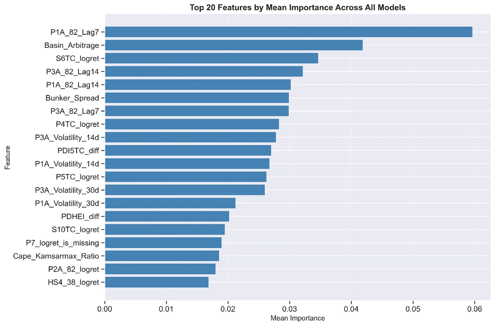
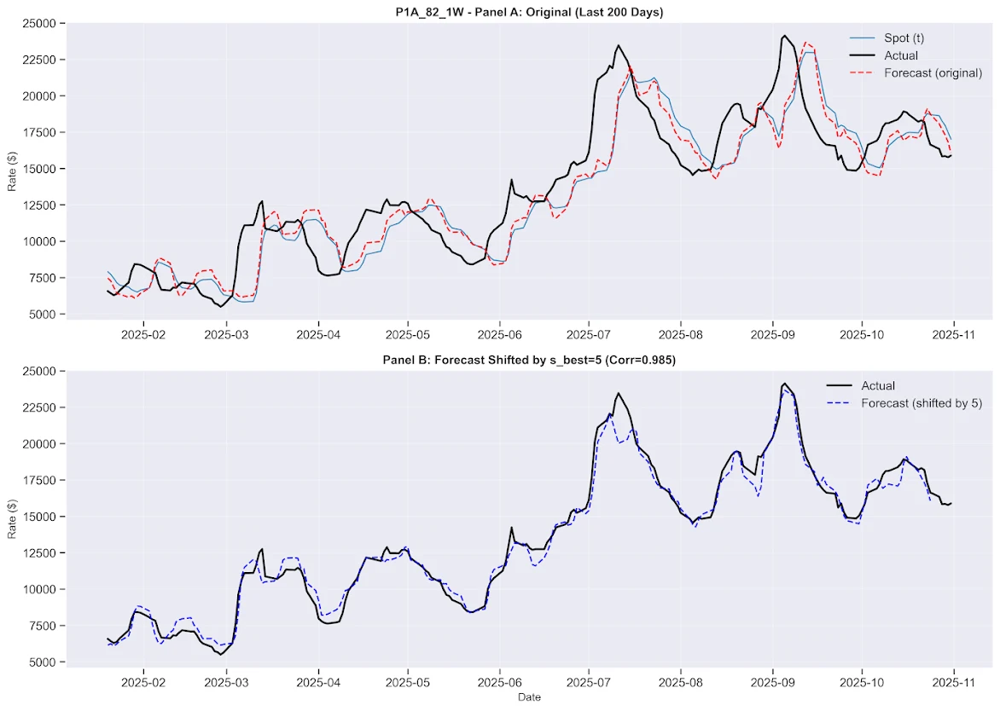
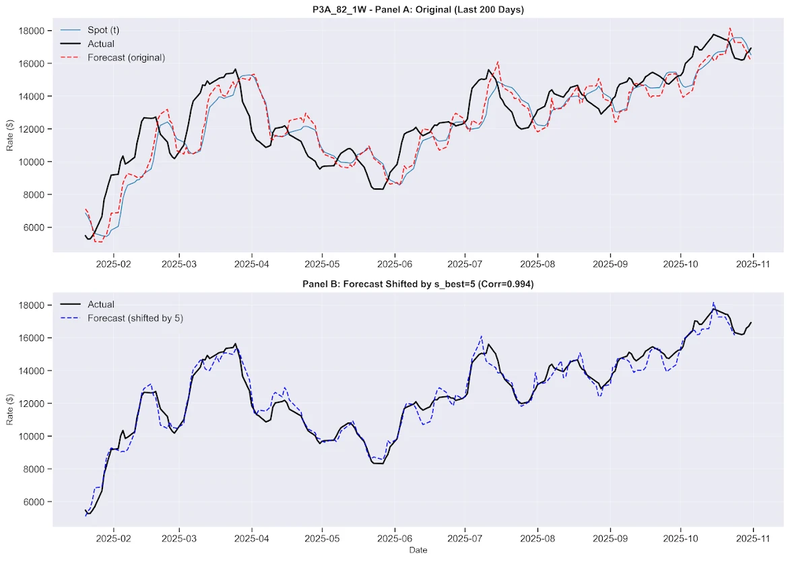
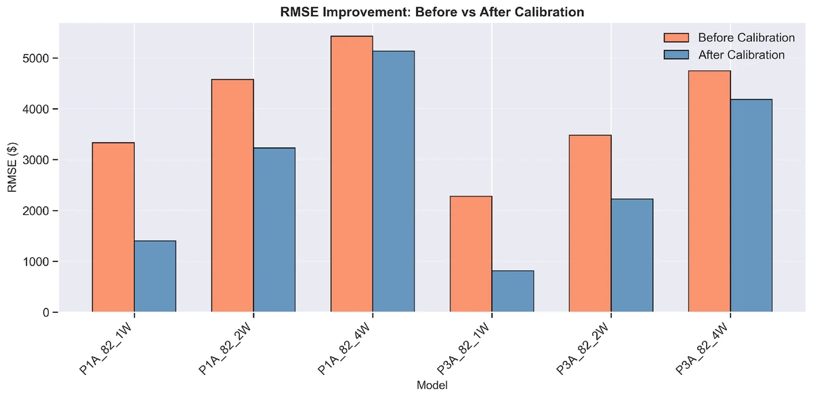

Research Brief · MSc Capstone & AFOS 14th General Assembly
Advanced Freight Rate Forecasting for Panamax Dry Bulk Carriers
Market problem
Dry bulk shipping carries over 40% of global maritime trade, and Panamax vessels account for 23.1% of the dry bulk fleet. Over the study window (January 2019 – November 2025, 1,796 trading days), Panamax spot rates swung between $3,785 and $47,500 per day—a 12.5× range overall, and up to 22× on the Atlantic route—exposing shipowners, charterers, and commodity desks to sharp timing risk.
Classical linear time-series models such as ARIMA and GARCH assume stable structure and linear dynamics, failing during sudden geopolitical or supply shocks. Rather than bolting classical and ML models together in a fragile two-stage hybrid where stage-1 errors compound, we designed an implicit hybrid: embedding autoregressive, volatility, and economic spread structure directly inside six independent XGBoost models—one for each route-horizon pair.
P1A_82 · Atlantic Basin
Skaw–Gibraltar Transatlantic round voyage
Agricultural and long-haul complex (grain, soy, coal). Sensitive to South American harvests, river levels, and Atlantic hurricanes; longer voyages slow fleet rebalancing and produce wider rate swings.
P3A_82 · Pacific Basin
Japan–South Korea Transpacific round voyage
Industrial commodity complex (coal and iron ore) anchored by Chinese, Japanese, Korean, and Indian power and steel output. Shorter rotations allow faster fleet repositioning and higher short-horizon predictability.
Data & features
We harmonized 701 raw indicators from three institutional sources—Clarksons Shipping Intelligence (634 supply, demand, and congestion series), the Baltic Exchange (spot routes, BPI/BDI/C5TC indices, and 22 Forward Freight Assessment contracts), and Ship & Bunker (daily VLSFO and MGO fuel prices)—onto a 1,796-day Baltic trading calendar.
All predictors carry a strict 1-day publication lag (t − 1 predicts t + h) to eliminate look-ahead bias, and target horizons (7, 14, and 28 calendar days) are modeled as stationary logarithmic returns yt,h = ln(Pt+h / Pt) (ADF p < 0.001 across all six targets). After frequency-aware VIF correlation filtering (|ρ| > 0.95) reduced 701 series to 186 base inputs, differential transformations (level, first difference, percent change, YoY, and 30-day rolling volatility applied only to true daily series) produced 245 engineered features across seven economic categories.
| Feature category (count) | Mean gain share |
|---|---|
| Autoregressive dynamics (90) — lagged spot rates (1–28 days) | 42.3% |
| Momentum (45) — cross-route log returns and term-structure trends | 18.4% |
| Cross-route & fuel arbitrage (12) — Atlantic–Pacific & Rotterdam–Singapore spreads | 16.1% |
| Volatility clustering (30) — 7-, 14-, and 30-day rolling volatility | 10.8% |
| Fundamental supply–demand (25) — orderbook, demolition, hire indices, trade flows | 6.7% |
| Technical indicators (25) — RSI(14), MACD, Bollinger Band position | 4.1% |
| Missing-data liquidity flags (18) — weekend, holiday, and thin-market regimes | 1.6% |
Empirical surprise: while FFA forward curves contributed under 3% of total gain, the Atlantic–Pacific basin spread (P1A_82 − P3A_82) ranked #2 overall globally, and the Rotterdam–Singapore bunker spread ranked #6.

Phase-shift calibration
Initial out-of-sample evaluation revealed a striking diagnostic paradox: raw models achieved 74.9% average threshold directional accuracy (84.2%–89.5% at 1 week), yet averaged a Theil’s U₁ of 0.959—barely ahead of a random walk. Plotting predictions against actuals showed that forecast peaks and troughs matched market shape closely, but consistently arrived 5 to 7 days early.
Permutation testing (1,000 random shuffles per model, p < 0.001) and day-of-week ablation tests ruled out calendar artifacts. The root cause lies in freight market microstructure: unlike exchange-traded equities with millisecond prints, dry bulk fixtures are negotiated bilaterally over phone and chat and aggregated into published Baltic indices with a 5–7 day reporting lag.


Statistical results
Across the out-of-sample test set (1,398–1,415 trading days per model via expanding-window evaluation), phase-shift calibration reduced RMSE by an average of 34.2%—and by 57.9%–64.3% at the 1-week operational horizon—bringing every route and horizon comfortably below both the random walk (U₁ < 1.0) and 60-day moving average (U₃ < 1.0) benchmarks.
| Model | Shift (d) | RMSE ($) | Δ RMSE | Theil’s U₁ | Theil’s U₃ | R² | TDA (%) |
|---|---|---|---|---|---|---|---|
| P1A_82 · 1-week | +5 | 1,403 | −57.9% | 0.394 | 0.258 | 0.912 | 93.4% |
| P1A_82 · 2-week | +7 | 3,230 | −29.4% | 0.659 | 0.557 | 0.823 | 79.0% |
| P1A_82 · 4-week | +7 | 5,136 | −5.4% | 0.877 | 0.804 | 0.687 | 65.7% |
| P3A_82 · 1-week | +5 | 814 | −64.3% | 0.339 | 0.184 | 0.951 | 97.6% |
| P3A_82 · 2-week | +7 | 2,225 | −36.1% | 0.639 | 0.459 | 0.871 | 82.3% |
| P3A_82 · 4-week | +7 | 4,186 | −11.8% | 0.878 | 0.758 | 0.734 | 70.0% |
| Mean (6 models) | +6.3 | 2,832 | −34.2% | 0.631 | 0.503 | 0.830 | 81.3% |
U₁ compares model RMSE to a naive random walk; U₃ compares against a 60-day moving average. TDA (Threshold Directional Accuracy) evaluates directional calls on significant moves exceeding $500/day.

Commercial validation
To test whether statistical gains translate into economic value, we simulated directional long/short positions whenever forecast deviations exceeded horizon-adjusted action margins (τ = $500, $750, and $1,250/day for 1-, 2-, and 4-week horizons). Under the base-case assumption ($250 brokerage cost per trade, 45-day holding duration), phase-shift calibration lifted simulated P&L by +58.7% (+$287.8M) to $778.0M across 6,268 trades over 2020–2025.
| Model | Trades | Total P&L ($M) | Avg P&L ($) | Win rate | Max DD ($M) | Sharpe |
|---|---|---|---|---|---|---|
| P1A_82 · 1-week | 1,234 | 157.4 | 127,500 | 82.1% | −12.3 | 2.87 |
| P1A_82 · 2-week | 1,166 | 180.2 | 154,500 | 75.6% | −18.7 | 2.41 |
| P1A_82 · 4-week | 1,016 | 136.7 | 134,500 | 68.3% | −23.4 | 1.98 |
| P3A_82 · 1-week | 1,138 | 100.9 | 88,700 | 85.7% | −8.9 | 3.12 |
| P3A_82 · 2-week | 972 | 118.6 | 122,000 | 78.2% | −14.2 | 2.53 |
| P3A_82 · 4-week | 742 | 84.2 | 113,500 | 73.5% | −19.6 | 2.08 |
| Total / Aggregate | 6,268 | 778.0 | 124,100 | 77.2% | −45.1 | 2.61 |
Base-case simulation (C = $250/trade, D = 45 days). Sharpe ratios are annualized from trade-level P&L without risk-free rate adjustment.
Robustness & practical limitations
Profitability held across all 54 sensitivity scenarios varying transaction costs ($0, $250, $500) and holding periods (30, 45, 60 days), with even the harshest stress case ($500 cost, 30-day hold) generating $526.6M. Across subperiods—pre-COVID stability (2019–2020 Q1, U₁ = 0.58), COVID volatility spikes (2020 Q2–2021, U₁ = 0.68, TDA 88.7%), and post-COVID normalization (2022–2025, U₁ = 0.61)—every regime remained profitable with U₁ well below 1.0.
In live deployment, practical boundaries still apply: backtests assume spot execution without 1%–3% bid-ask slippage on large multi-vessel fixtures, rely on timely proprietary data feeds, and require ongoing retraining to guard against structural regime shifts such as canal disruptions or new maritime emissions rules. Even with those caveats, the framework provides chartering and risk desks with an objective, economically explainable edge.